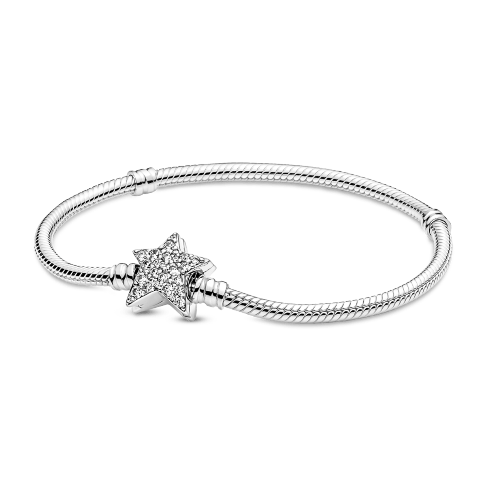

R$ 1.869,00
ou 10x de R$ 186,90
DESCRIÇÃO DO PRODUTO
Traga brilho celestial ao seu visual com a pulseira de corrente de cobra com fecho em estrela assimétrica Pandora Moments. Acabado à mão em prata de lei, o fecho em forma de estrela da pulseira é coberto por um pavé de zircônias cúbicas brilhantes em ambos os lados. Pode ser usado com até 16-18 pingentes e clipes desejados. Use-o sozinho para um visual simples e discreto ou combine-o com outros designs de inspiração celestial para um visual de outro mundo.